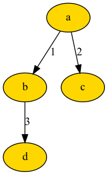

💡 Tips and Tricks¶
Merging Trees¶
To merge two separate trees into one, we can use the tree modify module.
In this example, we are merging two trees that have similar node b.
Children of node b from both trees are retained as long as merge_children=True is set.
If only children of other tree is desired, set overriding=True instead.
from bigtree import Node, print_tree, copy_nodes_from_tree_to_tree
# Construct trees
root1 = Node("a")
b1 = Node("b", parent=root1)
c1 = Node("c", parent=root1)
d1 = Node("d", parent=b1)
b2 = Node("b")
e2 = Node("e", parent=b2)
# Validate tree structure
print_tree(root1)
# a
# ├── b
# │ └── d
# └── c
print_tree(b2)
# b
# └── e
# Merge trees
copy_nodes_from_tree_to_tree(
from_tree=b2,
to_tree=root1,
from_paths=["b"],
to_paths=["a/b"],
merge_children=True, # set overriding=True to override existing children
)
# Validate tree structure
print_tree(root1)
# a
# ├── b
# │ ├── d
# │ └── e
# └── c
Trees with Weighted Edges¶
Edge weights should be defined in the child node for the parent-child edge since each node can only have one parent.
We can simply add weight attribute to the Node class.
However, if we want to plot the weighted tree, we can create a WeightedNode class to generate the edge attribute dictionary.
from bigtree import Node, tree_to_dot
class WeightedNode(Node):
def __init__(self, name, weight=0, **kwargs):
super().__init__(name, **kwargs)
self.weight = weight
@property
def edge_attr(self):
return {"label": self.weight}
# Construct weighted tree
root = WeightedNode("a")
b = WeightedNode("b", parent=root, weight=1)
c = WeightedNode("c", parent=root, weight=2)
d = WeightedNode("d", parent=b, weight=3)
graph = tree_to_dot(root, node_colour="gold", edge_attr="edge_attr")
graph.write_png("assets/weighted_tree.png")
